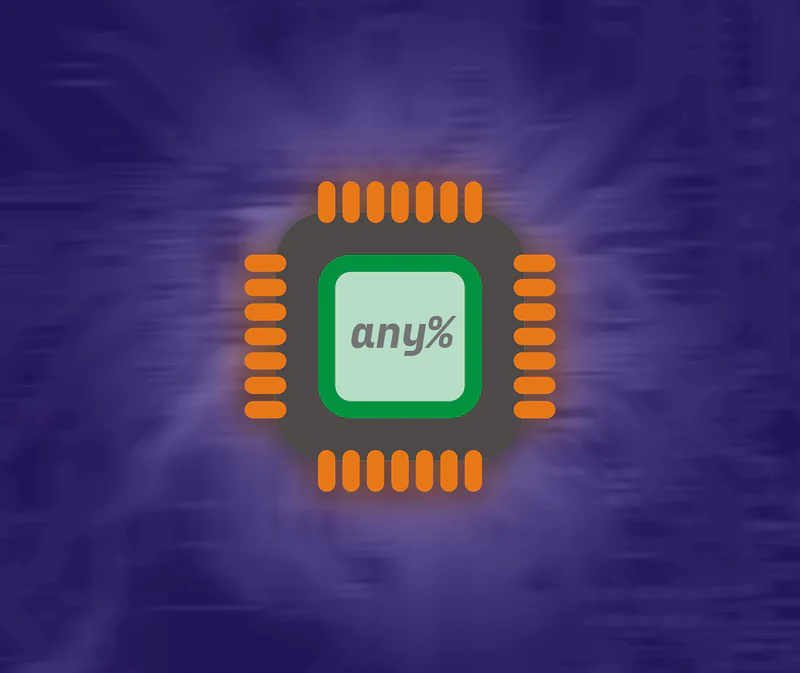

Blogs
No, LLVM can't fix your code
6 min. read
Y'all mind if I rant a bit first, promise I'll talk about a few optimizations that got my RISC-V emulator to run at 550 million instructions per second purely interpreted.
Speedrunning a CPU: RISC-V in a Week
13 min. read
I made a RISC-V Emulator that runs at 550 million instructions per second from scratch in one week. Here's how it went.
Voxel Engine in a Weekend
28 min. read
It feels like everyone who learns how to make a voxel-engine learns it through sheer osmosis of information, so let's change that. Come along, let's make you a voxel engine!
So I became God: Artificial Life
8 min. read
Let me take you through a journey of curiosity, growth, and cannibalism. One inspired by a video game and some questionable media..

This week in margarine
8 min. read
A quick update on the progress of my programming language margarine. It's build system, why it won't have a JIT, and other design decisions.

Everybody's so Creative!
6 min. read
After 4 years with Rust, I love the language – but I’m starting to think the ecosystem has an abstraction addiction. Or: why every Rust crate feels like a research paper on abstraction.

Godot Ruined My Sense of Speed
9 min. read
Godot didn’t just ruin my game. It ruined how I think about performance and abstraction. What started as a simple voxel prototype spiraled into an existential crisis

Four years, Five failures, One compiler
8 min. read
At 14, I thought writing a compiler would be a quick side quest in building a game engine. Four years later, I finally built one that works. And it was one hell of a journey.

hello world
1 min. read
uh, hi, idk what to say here but helloooo. i made a static site generator for this. it takes the first line of the markdown as the title and the 2nd line as the summary actually i lied you can use multiple lines if you end the line with a \